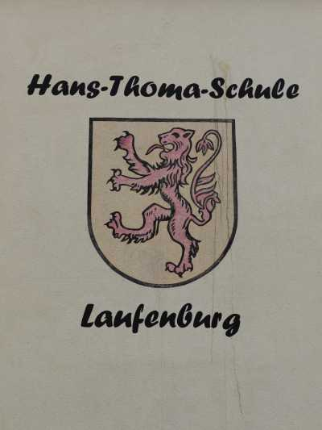
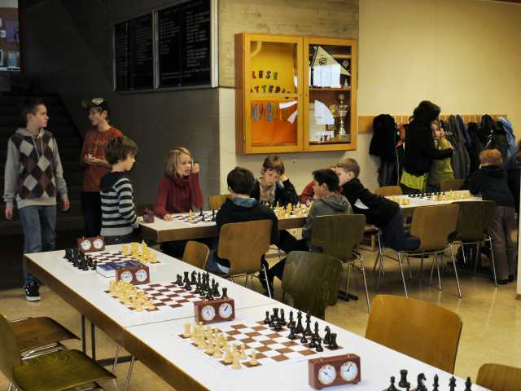
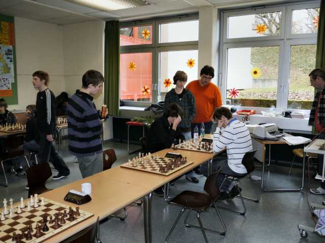
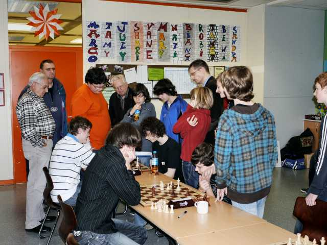
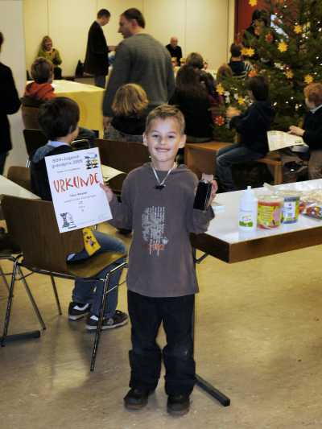
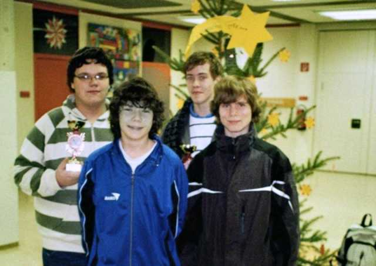

Zum ersten Mal ein JGP in der Hans-Thoma-Schule in Laufenburg


Beim Aufwärmen

Begrüßung durch Wolfgang Scheina

Harter Kampf in der U16/U18

Daniel gegen Lukas

Benno und Siegfried passen auf

Interessierte Beobachter

Manche Spiele zogen viele Zuschauer an

Die Siegerehrung beginnt

Jochen hatte die Preistische toll bestückt

Ein stolzer Teilnehmer mit Urkunde und Sachpreis

Am Ende fand auch noch die Siegerehrung für den Gesamtgrandprix 2009 statt

Jochen und Tobi erhielten einen Pokal bei der Gesamtwertung

Gruppenbild der "fortgeschrittenen" Laufenburger Teilnehmer